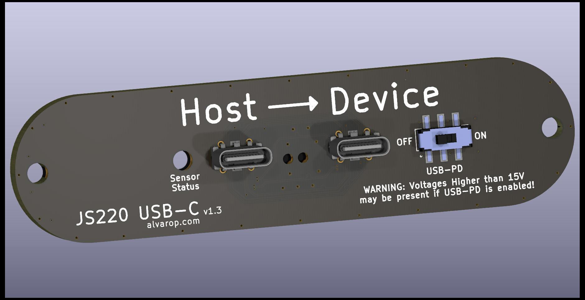
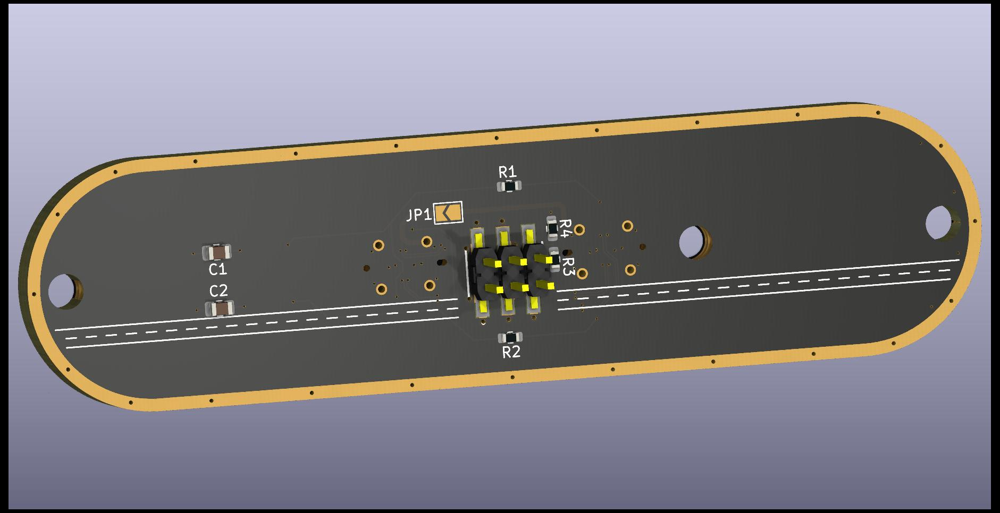

This is a front panel template for the Joulescope JS220
The template is based off the official Joulescope fp_baseline.pdf drawing
See js220_fp_template github repo for more information.


Joulescope JS220 Front Panel KiCad 6 Template by Alvaro Prieto is licensed under CC BY 4.0